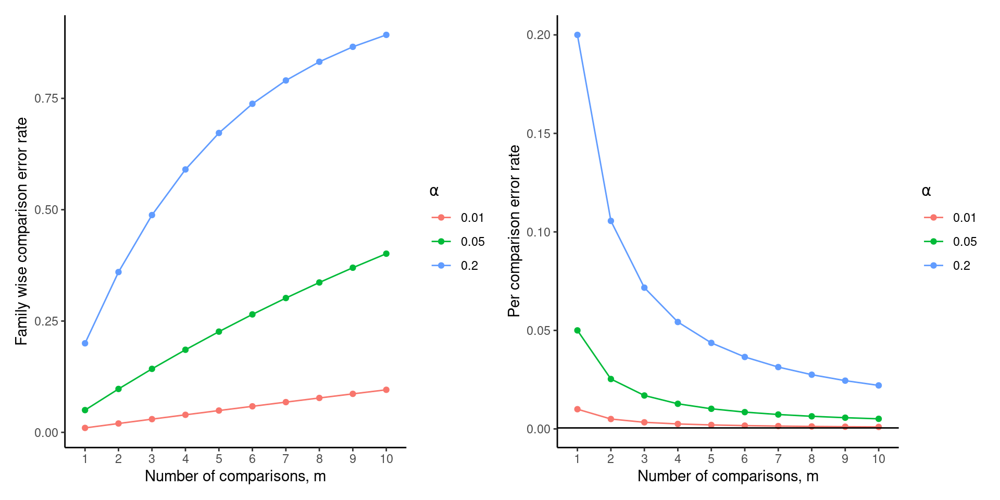

Multiple comparisons
Recall that each time we carry out a hypothesis test the probability we get a false positive result (type I error) is given by \(\alpha\) (the level of significance we choose).
When we have multiple comparisons to make we should then control the Type I error rate across the entire family of tests under consideration, i.e., control the Family-Wise Error Rate (FWER); this ensures that the risk of making at least one Type I error among the family of comparisons in the experiment is \(\alpha\).
| State of Nature | Don’t reject \(H_0\) | reject \(H_0\) |
|---|---|---|
| \(H_0\) is true | ✅ | Type I error |
| \(H_0\) is false | Type II error | ✅ |
or…

The familywise error rate (FWER) is the risk of making at least one Type I error among the family of comparisons in the experiment. Now let’s consider carrying out \(m\) independent t-tests and let for any single test, let Pr(commit a Type 1 error) \(= \alpha_c\) be the per comparison error rate (PCER). So for a single test the probability a correct decision is made is \(1 - \alpha_c\). Therefore for \(m\) independent t-tests the probability of committing no Type I errors is \((1 - \alpha_c)^m\) and the probability of committing at least one Type I error is \(1 -(1 - \alpha_c)^m = \alpha_F\) which is the upper limit of the FWER.

Classification of multiple hypothesis tests
Suppose we have a number \(m\) of null hypotheses, \(H_1, H_2, ..., H_m\). Using the traditional parlence we reject the null hypothesis if the test is declared significant and do not reject the null hypothesis if the test is non-significant. Now, summing each type of outcome over all \(H_i (i = 1.,..,m)\) yields the following random variables:
| Null hypothesis is true (H0) | Alternative hypothesis is true (HA) | Total | |
|---|---|---|---|
| Test is declared significant | V | S | R |
| Test is declared non-significant | U | T | m - R |
| Total | \(m_{0}\) | \(m - m_0\) | m |
- \(m\) is the total number hypotheses tested
- \(m_{0}\) is the number of true null hypotheses, an unknown parameter
- \(m - m_0\) is the number of true alternative hypotheses
- \(V\) is the number of false positives (Type I error) (also called false discoveries)
- \(S\) is the number of true positives (also called true discoveries)
- \(T\) is the number of false negatives (Type II error)
- \(U\) is the number of true negatives
- \(R=V+S\) is the number of rejected null hypotheses (also called discoveries, either true or false)
Using the predictmeans package
Recall,
## (Intercept) SurgeryP SurgeryS
## 8.4600 0.4900 3.0875\[ \begin{aligned} \operatorname{logAUC} &= \alpha + \beta_{1}(\operatorname{Surgery}_{\operatorname{P}}) + \beta_{2}(\operatorname{Surgery}_{\operatorname{S}}) + \epsilon \end{aligned} \]
Using the predictmeans package
- Fisher’s, Least Significant Difference (LSD)
Carry out post-hoc tests only if the ANOVA F-test is significant. If so declare significant \(100\alpha\%\) any pairwise difference > LSD. This does not control the FWER.
- Bonferroni correction
We reject the \(H_0\) for which the p-value, p-val, is p-val \(< \alpha_c = \frac{\alpha_f}{n_c}\) where \(\alpha_f\) is the FWER and \(n_c\) is the number of pairwise comparisons. Howerer, this makes no assumptions about independence between tests.
Multiple comparison procedures
- Tukey’s Honest Significant Difference (HSD)
This compares the mean of every treatment with the mean of every other treatmen and uses a studentized range distribution compated with a t-distribution for Fisher’s LSD and the Bonferroni correction.
Here Tukey’s studentixed range (TSR) \(=q_{m,df}(1 - \frac{\alpha}{2})\sqrt{2\times \frac{\text{residual MS}}{\text{# reps}}}\)
## Tukey multiple comparisons of means
## 95% family-wise confidence level
##
## Fit: aov(formula = logAUC ~ Surgery, data = rats)
##
## $Surgery
## diff lwr upr p adj
## P-C 0.4900 -1.1298813 2.109881 0.6863267
## S-C 3.0875 1.4676187 4.707381 0.0012479
## S-P 2.5975 0.9776187 4.217381 0.0039400- False Discovert Rate (FDR)
The FDR controls the expected (mean) proportion of false discoveries amongst the \(R\) (out of \(m\)) hypotheses declared significant.
Consider testing \(m\) null hypotheses with corresponding p-values \(P_1, P_2,...,P_m\); we then order then so that \(P_{(1)} < P_{(2)} <...<P_{(m)}\) (where \(P_{(i)}\) is the \(i^{th}\) largest \(i=1,...,m\)). The \(i^{th}\) ordered p-value is calculated as \(\frac{i}{m}q^*\) and the \(i^{th}\) null hypothesis is rejected if \(P_i \leq \frac{i}{m}q^*\)